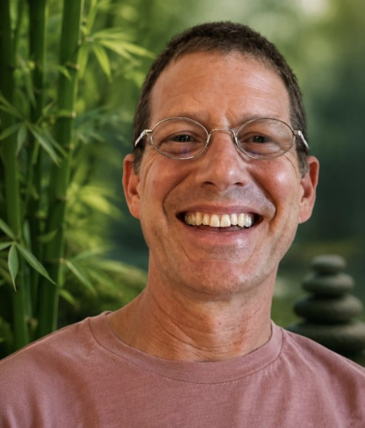

Organizers
Chiraag Kankariya
Founder of The Conscious Future Society, a multi-initiative platform at the intersection of consciousness, contemplative science, community, and technology.
Lauren L'Amour, MS
Founder of the Millions Meditating Alliance, Life Visionary Success Coaching, and Quantum Success Institute, and author of Sacred Habits. For over three decades, Lauren has coached entrepreneurs and changemakers to align inner peace with purpose and success.

Rohan Piple
Founder of AŠVA and a certified YOI (Yoga of Immortals) coach, Rohan is a Behavioral Health Specialist with a Master's in Sports Industry Management from Georgetown, specializing in mental performance for athletes and teams.

John Kolwaite
Abbot of Cambridge Zen Center since 2024, John has practiced Zen meditation since meeting Zen Master Seung Sahn in 1993, following a 29-year career as a Special Educator working with children on the autism spectrum.
Dr. Baruti KMT-Sisouvong, PhD
Director of the Transcendental Meditation Program for Cambridge and Metropolitan Boston since 2013, Dr. Baruti has personally taught TM to over 1,100 individuals and holds a PhD in Vedic Science.
Manas Ram
An NLP and Executive Coach, TEDx speaker, and meditator of over 22 years, Manas has led meditation and leadership programs at university campuses including Harvard and GWU, focused on reducing stress and improving organizational performance through mindfulness.